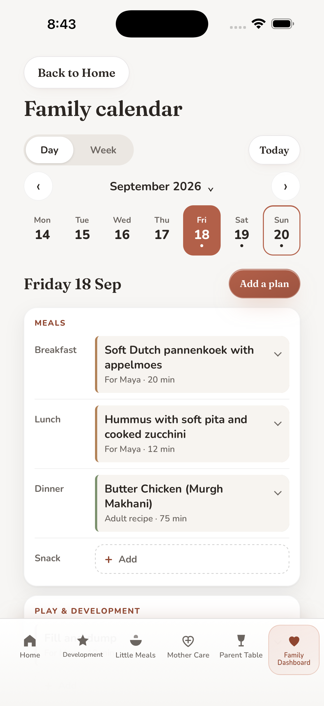

Development
Play ideas, books and real animals to explore with your child.
More about this section
- Development. Short adult-led activities, reading guidance and real animals for calm time together.
Find meal ideas, age based play and books, and Mother Care through pregnancy and the first year. Bring the ideas you choose into your family calendar.
For iPhone · English, Arabic and Spanish
A subscription is required after setup.
The App Store shows the current version, and Apple shows the local price and billing period before you confirm a purchase.

Explore something to cook, a book to read, or an activity to try together.
Place the ideas you choose in your calendar, with your notes and shopping.
Preview a day, week or month and choose its recipient. Later edits stay on your device.
Play ideas, books and real animals to explore with your child.
Age based meal ideas, recipes, allergens and Safe prep where available.
General information from pregnancy through the first year after birth.
Adult meals, searchable recipes and shopping lists.
Profiles, cooking history, reminders, settings, backup and restore in one place.
Family plans stay on this device. You choose when to share selected content or export an encrypted backup.
Privacy. Family-entered data stays in the app’s local storage and is not automatically transmitted to My Family World. One Mother Care setup preference stays on this device and is not sent to My Family World. A parent can deliberately share selected content or export an encrypted backup. On Apple devices, the app separately contacts Apple for product, entitlement, purchase and restore operations; those checks send no family-entered data to My Family World. In version 1.6, Family calendar plans also stay on this device, and book cover pictures in the Books list load online from Open Library and, for some covers, from Internet Archive servers.
Mother Care includes general information, urgent warning signs and links to named official sources.
It does not diagnose, assess symptoms or replace a clinician. Named sources have not reviewed, approved or endorsed the app.
Subscription. On a fresh installation, a verified Monthly or Annual subscription is required after setup. The selected plan renews automatically unless cancelled, and you can cancel anytime in your Apple Account settings. If plans or status are unavailable, first run offers Retry and Restore Purchases only.
One calm home for a mother and her family: Mother Care, Development, Little Meals, Parent Table and Family Dashboard, in English, Arabic and Spanish. Version 1.6 adds a Family calendar. This page is also in Arabic and Spanish; the privacy and terms pages are in English and Arabic.
App Store availability: My Family World is available on the App Store for iPhone in many countries and regions, including Saudi Arabia, the United Arab Emirates and the other Gulf states, the United Kingdom, the United States, India, the countries of the European Union, Mexico and other Latin American countries. Version 1.6.1 is available on the App Store.
For help with setup, subscriptions, reminders, sharing, backup, the Family calendar in version 1.6 or another app feature, email msalamissa@alumni.ie.edu. Include the app version and what you were trying to do, but do not email a child’s name or private health details.
¿Usas My Family World en español? Escríbenos a msalamissa@alumni.ie.edu para recibir ayuda con la configuración, la suscripción, los recordatorios, la copia de seguridad, el Calendario familiar o cualquier otra función. Indica la versión de la app y lo que intentabas hacer, sin incluir el nombre de ningún niño ni datos de salud privados. Consulta también My Family World en español. La Política de privacidad y los Términos y condiciones de uso están en inglés.